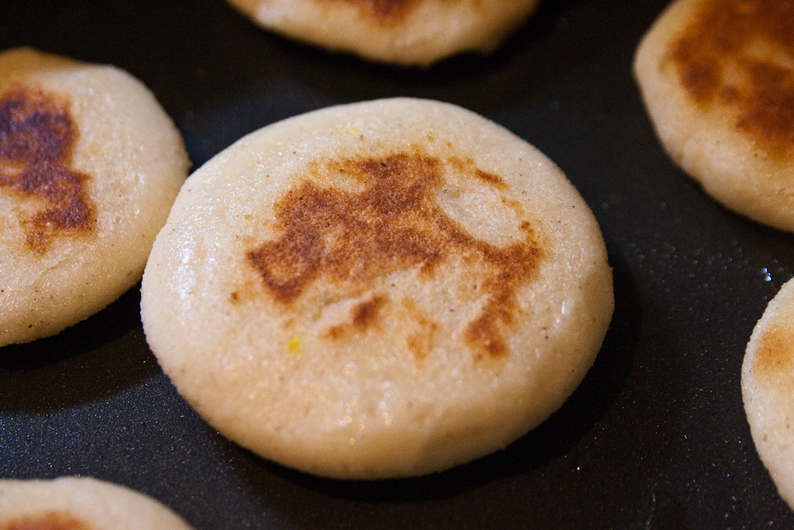

Como hacer Arepas

ingredientes
- 400 gramos de harina de maiz
- 375ml de agua
- 250ml de leche opcional
- una cucharadita de sal
- una cucharadita de azucar opcional
Instrucciones:
- anadir todos los ingredientes en un tazon
- mezclar
- formar una bola con la masa y dividirla en bolas de 100 gramos
- dejar reposar
- en un sarten untamos aceite y cocinamos por 5 o 6 minutos por cada lado
- una vez listas las abirmos con un cuchillo y metemos relleno
Inicio